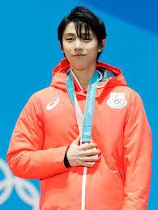

|  | |
| English Name | Yuzuru Hanyu |
| Japanese Name | 羽生 結弦 |
| Born | December 7, 1994 (age 27) Sendai, Miyagi, Japan |
| Nationality | Japan |
| Alma Mater | School of Human Science, Waseda University |
| Occupation | Figure Skater |
| Years active | 2004-present |
| Height | 172cm |
| Siblings | Saya Hanyu |
| Relationship status | Single |
Early Life
Hanyu was born on December 7, 1994, in Izumi-ku, Sendai, Japan,the second and youngest child to his father, Hidetoshi Hanyu, who is a junior high school teacher, and Yumi Hanyu, a former clerk at a department store.Hanyu's father was also an adviser to the baseball school club and recommended the sport to him before he eventually chose figure skating.His mother used to make all of Hanyu's costumes in his early career, including costumes for his 2010–2011 season free skate which was designed by American figure skater Johnny Weir.She accompanied him during his training in Toronto, Canada, while his father and older sister, Saya, stayed in Japan.Hanyu's given name came from the desire of his father so he would "live a dignified way like a tightly drawn bowstring",and also symbolizes confidence, strength, and straightness.
Hanyu began skating at the age of four after his sister's coach Mami Yamada had suggested he try the sport instead of being a nuisance during his sister's training.Yamada noted Hanyu's impatience when he first got onto the ice. He came running and jumped on the ice, then fell hard, hitting his helmet onto the ice, quickly got up and running again. However, Yamada praised Hanyu for his ability to express his sincerity. After coaching him until the end of his 2nd grade in elementary school, Yamada had to move to another prefecture and asked Shōichirō Tsuzuki [ja], former coach of Japan's first World Figure Skating Championships medalist Minoru Sano, to coach Hanyu and "not put his talent to waste".Figure skaters Hanyu looked up to while growing up are Evgeni Plushenko and Johnny Weir.He also mentioned Stephane Lambiel, Javier Fernández, and Dick Button as the skaters who influenced him at the press conference of the 2018 Winter Olympics.
Career
Hanyu began his season with a win at the 2013 Finlandia Trophy.He won silver in both of his 2013–14 Grand Prix events, the 2013 Skate Canada International and the 2013 Trophée Éric Bompard, qualifying him for the 2013–14 Grand Prix Final. At the competition, Hanyu set a new world record in the short program with 99.84 points and won the title.He subsequently competed at the 2013–14 Japan Championships where he went on to win a second Japanese national title and named to Japan's teams to the Olympics and World Championships.
At the 2014 Winter Olympics in Sochi, Hanyu took part only in the men's short program at the Figure Skating Team Event for Team Japan. He won that segment and giving Team Japan 10 points.Hanyu later broke his world record and became the first skater to score over 100 points in the short program in the men's short program individual event with 101.45 points.Hanyu won the overall event and earned the first Olympic gold medal for Japan in the men's figure skating event, and only the second for the nation, following Shizuka Arakawa's gold medal in the women's event in 2006 in Turin.
List of Awards and Honors
| Years | Title | Organization or Country |
|---|---|---|
| 2014 | Gold Medal | Olympic Games |
| 2018 | ||
| 2018 | People's Honour Award | Prime Minister |
| 2014,2018 | Japan Medal of Honor(Purple Ribbon) | Government of Japan |
| 2020 | Most Valuable Skater | Internationla Skating Union |
| 2009 | JOC Sports Award-New Comer Award | Japanese Olypic Committee |
| 2013 | Best Award | |
| 2015 | Special Achievement Award | |
| 2018 | Special Honor Award | |
| 2014,2018 | Olypic Special Award | |
| 2021 | Azusa Ono Memorial Award | Waseda University |
| Alumni Association Toukon Award |